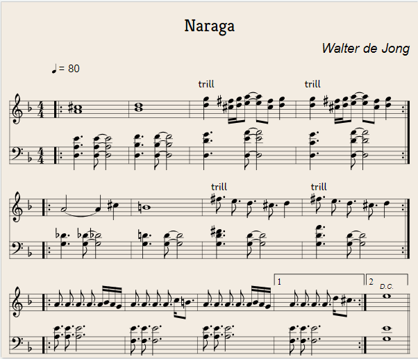

Naraga
Walter de Jong

https://editor.drawthedots.com/?t=X%3A1%0AT%3ANaraga%0AC%3AWalter%20de%20Jong%0AL%3A1%2F16%0AM%3A4%2F4%0AQ%3A80%0AK%3ADm%0AV%3A1%0A%7C%3A%20%5BA%5Ec%5D16%20%7C%20%5BBd%5D16%20%7C%20%22trill%22%5Bdg%5D4%20%5B%5Ec%5Ef%5D%5Bdg%5D%5Bea%5D2-%20%5Bea%5D2%5Bcf%5D2%20%5Bdg%5D4%20%7C%20%22trill%22%5Bdg%5D4%20%5B%5Ec%5Ef%5D%5Bdg%5D%5Bea%5D2-%20%5Bea%5D2%5Bcf%5D2%20%5Bdg%5D4%20%3A%7C%0A%7C%3A%20A8-%20A4%5Ec4%20%7C%20%3DB16%20%7C%20%22trill%22%5Ef3%20e3%20d3%20%5Ec3%20d4%20%7C%20%22trill%22%5Ef3%20e3%20d3%20%5Ec3%20d4%20%3A%7C%0A%7C%3AA3%20A3%20A3%20A3%20ABAG%20%7C%20A3%20A3%20A3%20A3%20c%3DB3%20%7C%20A3%20A3%20A3%20A3%20ABAG%20%7C1%20A3%20A3%20A3%20A3%20d%5Ec3%20%3A%7C2!D.C.!%20e16%20%7C%7C%0AV%3A2%20clef%3Dbass%0A%7C%3A%20%5BD%2CA%2CE%5D6%20%5BD%2CA%2CE%5D2-%20%5BD%2CA%2CE%5D8%20%7C%20%5BD%2CB%2CF%5D6%20%5BD%2CB%2CF%5D2-%20%5BD%2CB%2CF%5D8%20%7C%20%5BD%2CDG%5D6%20%5BD%2CEA%5D2-%5BD%2CEA%5D8%20%7C%20%5BD%2CCG%5D6%20%5BD%2CDA%5D2-%20%5BD%2CDA%5D8%20%3A%7C%0A%7C%3A%20%5BG%2C_D%5D6%20%5BG%2C_D%5D2-%20%5BG%2C_D%5D8%20%7C%20%5BG%2C%3DD%5D6%20%5BG%2CD%5D2-%20%5BG%2CD%5D8%20%7C%20%5BG%2CD%5EF%5D6%20%5BG%2CD%5D2-%20%5BG%2CD%5D8%20%7C%20%5BG%2CDA%5D6%20%5BG%2CD%5D2-%20%5BG%2CD%5D8%20%3A%7C%0A%7C%3A%5BA%2CE%5D3%20%5BA%2CE%5D3%20%5BA%2CE%5D10%20%7C%20%5BF%2CE%5D3%20%5BF%2CE%5D3%20%5BF%2CE%5D10%20%7C%20%5BA%2CE%5D3%20%5BA%2CE%5D3%20%5BA%2CE%5D10%20%7C1%20%5BF%2CE%5D3%20%5BF%2CE%5D3%20%5BF%2CE%5D10%20%3A%7C%5BG%2CE%5D16%7C%7C%0A
X:1
T:Naraga
C:Walter de Jong
L:1/16
M:4/4
Q:80
K:Dm
V:1
| A^c | Bd | dg | ^c^f | dg | ea | ea | cf | dg | dg | ^c^f | dg | ea | ea | cf | dg |
| |: | 16 | | 16 | "trill" | 4 | | | 2- | 2 | 2 | 4 | "trill" | 4 | | | 2- | 2 | 2 | 4 :| |
|: A8- A4^c4 | =B16 | "trill"^f3 e3 d3 ^c3 d4 | "trill"^f3 e3 d3 ^c3 d4 :|
|:A3 A3 A3 A3 ABAG | A3 A3 A3 A3 c=B3 | A3 A3 A3 A3 ABAG |1 A3 A3 A3 A3 d^c3 :|2!D.C.! e16 ||
V:2 clef=bass
| D,A,E | D,A,E | D,A,E | D,B,F | D,B,F | D,B,F | D,DG | D,EA | D,EA | D,CG | D,DA | D,DA |
| |: | 6 | 2- | 8 | | 6 | 2- | 8 | | 6 | 2- | 8 | | 6 | 2- | 8 :| |
| G,_D | G,_D | G,_D | G,=D | G,D | G,D | G,D^F | G,D | G,D | G,DA | G,D | G,D |
| |: | 6 | 2- | 8 | | 6 | 2- | 8 | | 6 | 2- | 8 | | 6 | 2- | 8 :| |
| A,E | A,E | A,E | F,E | F,E | F,E | A,E | A,E | A,E | F,E | F,E | F,E | G,E |
| |: | 3 | 3 | 10 | | 3 | 3 | 10 | | 3 | 3 | 10 |1 | 3 | 3 | 10 :| | 16|| |